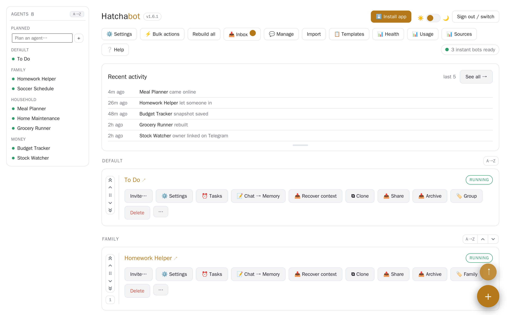
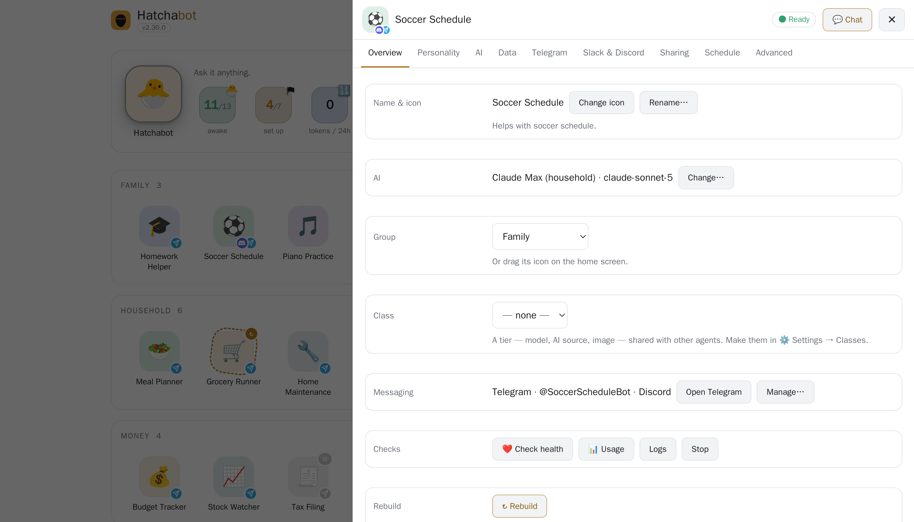
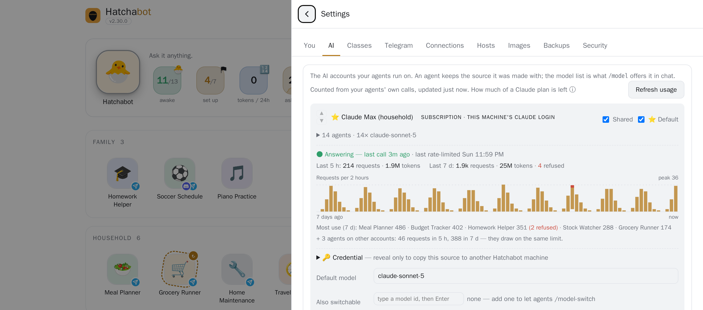

ChatGPT and Claude give you one brilliant assistant, in their app, for you. Hatchabot is an open-source agentic operating system: it turns the plan you already pay for into a staff of agents that live on a computer you own — each with its own job and memory, each a Telegram contact your whole family can message.
And it manages itself. Hatchabot comes with its own agent — a manager you talk to in plain words. "Which agents look unhealthy?" "Make a travel agent for the Sicily trip." It reads everything, changes nothing, and hands you a card to confirm.
the open-source agent runtime · one isolated container per agent · a front door people already have — Telegram, or just the web app
bash -c "$(curl -fsSL https://hatchabot.com/install.sh)"
One line on a Linux or macOS machine that stays on. Then the app walks you through your first agent.
The first question
Fair question — and more so every year. They remember you now. They run tasks on a schedule. They read your Drive. For one person in one app they are excellent, and Hatchabot doesn't try to beat them at it: it uses one of them as the brain. Four things change once the assistant has to serve a household.
Sharing an assistant over there means everyone has an account with them: ChatGPT projects invite people who have their own, Claude's want a paid seat each. Here your family just messages a contact in Telegram — no app, no AI account, no extra seat. Anyone who wants to make agents of their own gets a sign-in on your machine, not a subscription, and every agent runs on your one plan.
Both remember you. Neither lets you open that memory, correct a wrong fact, back it up, or carry it to another company — Claude will import memories from the others, but nothing comes back out. A Hatchabot agent's memory is a text file on your disk, and it survives a rebuild, a change of model, and a move to another machine.
One assistant answers your tax question, your kid's homework and your condo board in the same voice, from the same context. Hatchabot agents are separate by design — their own persona, model, data and people — and they can consult each other mid-task, which no consumer chat app lets an ordinary subscriber do.
Their scheduled tasks run in their cloud, with the tools they chose, across your whole account. A Hatchabot agent runs on your computer with exactly what its job needs: this folder, that git repo, a Google account that may read mail but never send. Put one on a local model and nothing leaves the house at all.
The honest version: if you're the only one using it and you're happy inside one app, the chat apps are more polished, need no setup, and are the better deal. Hatchabot is for when there are several jobs, several people, and things you'd rather keep on hardware you own. Comparisons describe the consumer apps as of September 2026.
One subscription, the whole household
A tutor for the kids, a planner the whole family shares, your own tax and investing advisors — every agent in the house runs on the same Claude plan, on your machine. Nobody else needs an AI account or an app: they just message the agents made for them on Telegram.
Your credential stays on your computer, and people talk to your agents, never to your account. Prefer to pay per use, or not at all? Any agent can run on an API key or a local model instead.
An example household
The control panel
Every agent is an icon you can name, colour and drag into groups. The icon itself tells you how the agent is: a spinning ring while it rebuilds, a mark for each app that reaches it, a dot when it has said something you haven't read. Beside the manager, a row of tiles counts what matters — how many are awake, what the fleet asked your AI in the last five hours, anyone knocking, anything waiting for you — and each tile opens the screen that deals with it. It's a web page on your own machine — no cloud dashboard, nothing to log in to but this.

The big icon at the top is your Hatchabot agent. Ask it in plain words — "which agents look unhealthy?", "make a travel agent for the Sicily trip" — and it does the reading itself. Anything that would change something comes back as a card you confirm on the home screen, with what it will do and how risky it is — and if you give the manager its own Telegram bot, it messages your phone to say a card is waiting. It runs on whichever AI you already have, and it can only propose: Hatchabot carries the change out.

Agents share one subscription, so one busy agent can use up everyone's limit. Each AI source shows requests and tokens for the last 5 hours and 7 days, which agents are the heaviest, and a red banner the moment calls start getting refused.

What you actually buy from a frontier lab
A chat app is a product built around a model, and the company that owns the model owns the product: how the agent behaves, what it remembers, which tools it may touch, what it costs next year, and whether it still exists next year.
Hatchabot takes one thing from them — tokens — and leaves the rest in the open. The runtime is OpenClaw, the control plane is this project, both open source and MIT. How an agent thinks, what it remembers, what it may reach and who may talk to it are decided by files on your machine and by code anyone can read, fork and fix.
Which is why swapping labs is a setting, not a migration: an agent moves between Claude, Gemini and a local model without being rewritten. When a vendor retires an interface — OpenAI shut down its Assistants API in August 2026 and retires Agent Builder in November — your agents don't go with it.
Features
Hatchabot's own agent, on whichever AI you already pay for. Ask it to make, fix, move, share or rebuild an agent; it reads health, logs, usage and files, and every change comes back as a card you confirm. It also tells you what to add — the gaps beside the agents you have, or a job one agent is quietly doing twice. It lives in a network jail with a key that can only propose, and it messages your phone when something is waiting.
A name, a paragraph and a bot token. Clone one that works, import a template someone shared, keep a launchpad of ones you're planning.
Claude, Gemini or a local model, switchable live. Cheap models for simple jobs, the best one where it matters — or nothing per message at all.
Per agent: a folder, a git repo, a Google account that can read mail but never send. Each agent gets what its job needs and nothing else.
Scheduled tasks, and event-triggered ones where a zero-cost check decides whether to wake the model at all. Agents message you first when it matters.
Your investing agent asks your tax agent mid-task — with scoped tokens, loop guards and rate limits.
Telegram, or the web app — an agent can have its own bot, or none at all. Talk to it one to one, share it with several people who each keep a private thread, or put it in a group room — with memory shared or personal, and everyone told which. Strangers who find a bot get silence — only people you invited, or already know, get through. Slack and Discord are built and land next, once they have been run against real apps.
Health, usage per source and per agent, an audit trail, nightly backups with a restore drill, and upgrades you try on one agent before the fleet.
Built on OpenClaw, the open-source agent runtime: every Hatchabot agent is a stock OpenClaw gateway in its own Docker container. Hatchabot adds the layer OpenClaw leaves to you — many isolated installs, run as a fleet, by more than one person.
Build on it
An agent is a container with a job, its own credentials and its own memory, and you make one by describing it in English — no code, no deployment. The first takes an afternoon; the twentieth takes a minute, because everything under it is already standing. Some of the shapes that makes possible:
A meeting scheduler with its own inbox: people send their availability, it negotiates a time with every invitee, and runs group votes to an answer. Nobody needs Telegram or an account.
A property manager for a condo corporation, with that client's mail and files — then cloned for the next one. Separate containers, credentials and memory: nothing mixes.
A QA agent wired to the one it tests, running regressions so you know it still answers correctly after a change.
Export one as a single file — persona, rules and schedules, with credentials and private memory stripped — and someone else runs it on their own accounts.
OpenAI and Anthropic sell excellent engines and SDKs to build on. What they don't hand you is the layer around many long-lived agents: tenancy, credentials on your own hardware, a front door people already have, and one console for the fleet. That layer is Hatchabot — and as its operator, uptime, backups and security are yours.
Compared
A chat app is a place you go to talk to one assistant. Hatchabot is a staff of agents that live on your machine and come to you.
| Claude.ai / ChatGPT | Hatchabot | |
|---|---|---|
| Shape | One assistant, one app, one person | A staff of agents with jobs, for a household |
| Who can use it | You; others need their own account, and a paid seat on Claude | Anyone you invite, on Telegram, with no account of their own |
| Memory | Kept by the provider — you can clear it, not read or move it | Text files on your disk: read them, fix them, back them up, take them with you |
| Acts on its own | Scheduled tasks, in their cloud, with their tools | Schedules, events, and requests from other agents — on your machine |
| Access to your things | The connectors they built, across your whole account | Per agent: one folder, one repo, one account — with limits you set |
| Choice of AI | That company's models | Claude, Gemini or a local model — per agent, switchable live |
| Who decides how it behaves | The vendor — their client, their rules, their roadmap | Open source (MIT): files you edit, code anyone can fork — you buy only the inference |
| If you leave | Your history stays with them | Export it, move it to another machine, change provider — the agents are yours |
The honest caveat: the chat apps are polished, need no setup, and their models are excellent. Hatchabot doesn't compete with the model — it uses one, Claude by default. It competes with the app around the model. (Coding agents like Codex and Claude Code are a different tool again: one agent, one repo, one task — and one of the things you can build here.)
How it works
Telegram on their phones — each agent is a contact — or the Hatchabot app itself, each with their own sign-in. Slack and Discord come next.
Node + SQLite on your machine: registry, encrypted secrets, scheduler, health, backups, audit trail.
One OpenClaw gateway per agent, with its own bots, volume and credentials — dozens on one box.
Claude Max or API · Gemini · a local model · folders · git repos · a Google account.
Each agent's home directory is a Docker volume: persona, memory, sessions, tools. The runtime image is shared, versioned and swapped under an agent without touching the volume — so an upgrade or rebuild never costs an agent its memory.
Get started
In Telegram, open @BotFather, send /newbot, pick a name, and keep the token it gives you. You can skip this and talk to your agents in the app, then add Telegram later.
Install the Claude CLI with npm i -g @anthropic-ai/claude-code, log in once, then run claude setup-token and keep that token too.
On the computer that stays on, run:
bash -c "$(curl -fsSL https://hatchabot.com/install.sh)"
It checks for git, Docker and Node 22 (and offers to install what's missing), fetches the latest release, pulls the pre-built runtime image and installs the background service. hatchabot doctor checks the result.
Go to http://localhost:8080 on that computer and create your account — you become its owner. The setup guide then takes the Claude token and the bot token, creates your first agent, and can turn on HTTPS over Tailscale so it opens on your phone.
Click its icon to chat in the app, or open its Telegram link and send a message. It will still remember this conversation next year.
A Linux or macOS computer that stays on, with Docker and Node 22+ — a Mac mini, a home server, an old laptop.
Optionally a Telegram account, if you want to reach your agents from your phone (Slack and Discord are next).
An AI: a Claude subscription (Pro for a couple of agents, Max for a household), an API key, or a local model with no account at all.
Quick start · Philosophy · Slide deck · Releases · Security
Questions
You need to be comfortable pasting one command into a terminal, once. After that everything happens in the web app and in Telegram. The people you invite need nothing but Telegram.
The software is free and open source (MIT). You bring the hardware and the AI: one Claude Pro or Max subscription runs every agent in the household for a flat monthly fee — the rest of the family doesn't need their own plan to use the agents you set up for them. An API key is billed per token instead, and a local model costs nothing per message.
Any Linux or macOS computer that stays on and runs Docker. The runtime image is about 2 GB, and each agent is one container with its own volume — a Mac mini comfortably runs a household's worth. A second machine can host agents too, over Tailscale.
Agents, their memory and your credentials live on your machine. Messages travel through Telegram (or through nothing at all, if you chat in the app), and each turn is sent to the AI provider you chose for that agent — or to nobody, if the agent runs on a local model.
They can find a bot — Telegram usernames are public — but they get silence. An agent only listens to people you invited or who already use one of your agents; an invite can even name the one person it is for. Anyone else's message is dropped before it reaches the agent, and you are never bothered with it.
Everyone in the household has their own sign-in. If a family member forgets theirs, you send them a one-time reset link from the app and they choose a new one — you never see it. If you forget yours, "Forgot password?" sends a link to the Telegram account you linked — no email server needed. (With nothing linked, the owner resets it with one command on the machine.)
Every agent runs in its own container with its own bot and credentials, secrets are encrypted at rest, and the app is meant to be reached over your private Tailscale network, never a port opened to the internet — the setup guide turns that on in one press. Everyone signs in as themselves. A daily posture check flags agents that combine a wide audience with a powerful capability. The code has been through twenty-four full audits, the latest a security review of every sign-in and invite path; see SECURITY.md to report an issue.
No. Telegram is the easiest start — it's free, it's on every platform, and a new bot takes a minute at @BotFather — or an agent can be on nothing at all: you then talk to it in the Hatchabot app itself. Slack and Discord are built and being tested against real workspaces before they are switched on. Every chat app connects outward from your machine, so nothing of yours has to be reachable from the internet.
Every Hatchabot agent is an OpenClaw gateway. Hatchabot gives each one its own isolated install and adds what a fleet needs: creating, rebuilding, moving and backing up agents; inviting people; managing credentials once; and upgrading one agent at a time. For a single personal agent, plain OpenClaw is fine.